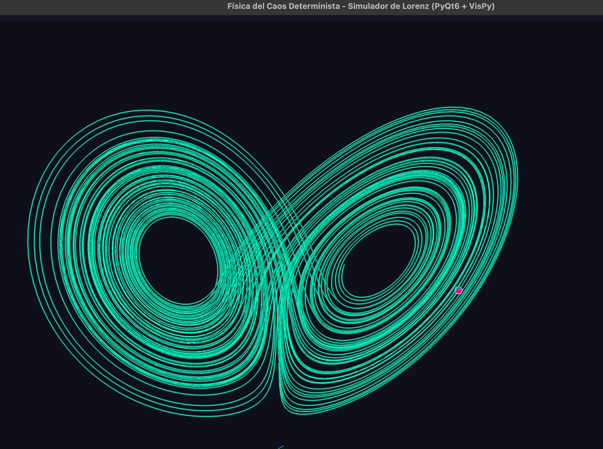
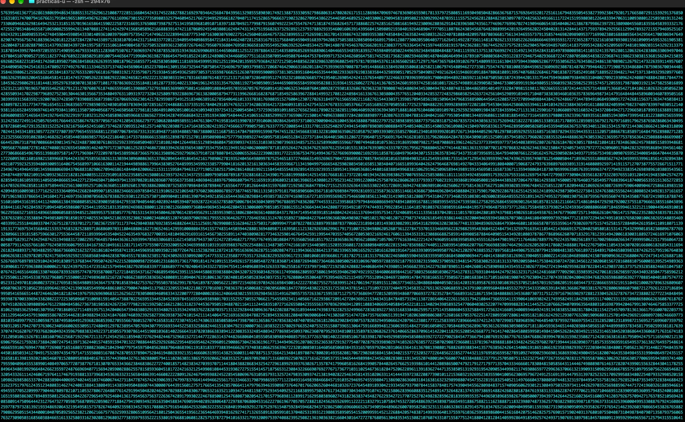
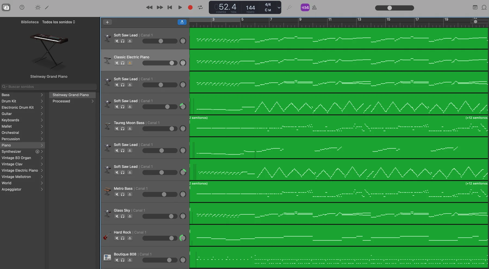

Fundamentos de computación
Principios para modelar problemas y construir soluciones computacionales.
SITIO PERSONAL
Estudiante de Ciencia de la Computación · Arreglista musical
Exploro la computación desde sus fundamentos y la música desde la composición, los arreglos y la producción digital.
01 / PERFIL
Soy estudiante de Ciencia de la Computación en la Universidad Católica San Pablo y arreglista musical.
Me interesa comprender cómo funcionan los sistemas, transformar ideas en proyectos y explorar la relación entre tecnología, matemáticas y creatividad sonora. La computación me permite investigar y construir; la música, organizar ideas y darles forma a través de arreglos y producción digital.
Este sitio reúne parte de ese recorrido. Te invito a revisar la sección de intereses para conocer los temas que me motivan y la sección de proyectos para ver algunas de mis exploraciones en programación, simulación y creación musical.
02 / FORMACIÓN
La carrera de Ciencia de la Computación de la UCSP combina fundamentos teóricos, matemáticos y prácticos. La universidad publica una malla curricular 2026; puedes consultar allí la secuencia completa de asignaturas, sus créditos y su organización.
PLAN CURRICULAR · UCSP
Documento oficial publicado por la Universidad Católica San Pablo.
Fuente: portal de Transparencia de la UCSP. La universidad mantiene allí la versión vigente y las versiones anteriores.
ÁREAS DE FORMACIÓN
El Departamento de Computación destaca las siguientes áreas dentro de su enfoque académico:
Principios para modelar problemas y construir soluciones computacionales.
Diseño de procedimientos y análisis de su eficiencia.
Herramientas matemáticas para analizar y resolver problemas.
Modelos y métodos que permiten aprender patrones y automatizar tareas.
Preparación, análisis e interpretación de información.
Técnicas para extraer información de imágenes y video.
Representación visual de datos, modelos y escenas.
Protección de sistemas, información y servicios digitales.
DOCENTES E INVESTIGADORES
Una selección de integrantes del Departamento de Computación. Los enlaces llevan a perfiles públicos de LinkedIn; sus líneas de trabajo se describen según el directorio institucional. La asignación de docentes a cada curso puede variar por semestre.
DOCENTE · INVESTIGACIÓN
Inteligencia artificial y sistemas multiagente.
Ver LinkedInDOCENTE · INVESTIGACIÓN
Inteligencia artificial, aprendizaje de máquina, modelos probabilísticos y procesamiento de lenguaje natural.
Ver LinkedInDOCENTE · INVESTIGACIÓN
Ciencia de datos, optimización y modelamiento estocástico.
Ver LinkedInDOCENTE · INVESTIGACIÓN
Bioinformática.
Ver LinkedInDOCENTE · INVESTIGACIÓN
Web semántica, bases de datos e interacción humano-computador.
Ver LinkedIn03 / INTERESES
La inteligencia artificial, los nuevos paradigmas de cómputo y los sistemas autónomos amplían las posibilidades de la ciencia y la tecnología. Comprenderlos hoy permite imaginar y construir las herramientas del mañana.
Permitirá crear sistemas capaces de reconocer patrones, apoyar decisiones y automatizar tareas complejas en campos como la ciencia, la industria y la salud.
Podría abrir nuevas vías para simular materiales y abordar ciertos problemas especializados difíciles para los equipos clásicos; será un complemento, no un reemplazo universal.
Integrará sensores, control, mecánica e inteligencia artificial para que las máquinas interactúen con su entorno y realicen tareas de precisión, asistencia y exploración.
El uso de señales y magnitudes físicas continuas puede ofrecer enfoques eficientes para simulaciones, procesamiento de señales y determinados problemas de optimización.
04 / PROYECTOS
Una selección de trabajos y exploraciones que conectan programación, matemáticas, ciencia y creación musical.

01SIMULACIÓN · SISTEMAS DINÁMICOS
Simulador visual del sistema de Lorenz, desarrollado con PyQt6 y VisPy, para observar trayectorias y explorar la sensibilidad a las condiciones iniciales.

02MATEMÁTICAS · PROGRAMACIÓN
Exploración de la generación computacional de números primos de gran tamaño y la representación de resultados numéricos de longitud extensa.

03MÚSICA · PRODUCCIÓN DIGITAL
Composición y organización de arreglos musicales mediante varias pistas e instrumentos virtuales, combinando patrones rítmicos y líneas melódicas.
05 / REFERENCIAS
Instituciones y referencias relacionadas con mi entorno de formación.